Detecting multilocus adaptation using Redundancy Analysis (RDA)
Introduction
The purpose of this vignette is to illustrate the use of Redundancy Analysis (RDA) as a genotype-environment association (GEA) method to detect loci under selection (Forester et al., 2018). RDA is a multivariate ordination technique that can be used to analyze many loci and environmental predictors simultaneously. RDA determines how groups of loci covary in response to the multivariate environment, and can detect processes that result in weak, multilocus molecular signatures (Rellstab et al., 2015; Forester et al., 2018).
RDA is a two-step analysis in which genetic and environmental data are analyzed using multivariate linear regression, producing a matrix of fitted values. Then PCA of the fitted values is used to produce canonical axes, which are linear combinations of the predictors (Legendre & Legendre, 2012). RDA can be used to analyze genomic data derived from both individual and population-based sampling designs.
Assumptions
RDA is a linear model and so assumes a linear dependence between the response variables (genotypes) and the explanatory variables (environmental predictors). Additional detail can be found in Legendre & Legendre (2012). We also recommend Borcard et al. (2011) for details on the implementation and interpretation of RDA using the vegan package (Oksanen et al, 2017).
Data & packages
In this vignette, we’ll apply RDA to genomic data from 94 North American gray wolves (Canis lupus) sampled across Canada and Alaska (Schweizer et al., 2016). Results of the RDA at the full set of 42,587 single nucleotide polymorphism (SNP) markers are available in Forester et al. (2018). Here, in the interest of computational efficiency, we will use a randomly sampled subset of 10,000 SNPs from this larger data set. We are interested in understanding how wolves may be locally adapted to environmental conditions across their North American range
In this case, the data are individual-based, and are input as allele counts (i.e. 0/1/2) for each locus for each individual wolf. For population-based data, you can input the genomic data as allele frequencies within demes. The distinction between individual and population based analyses may not be straightforward in all cases. A simple guideline would be to use an individual-based framework when you have individual coordinates for most of your samples, and the resolution of your environmental data (if in raster format) would allow for a sampling of environmental conditions across the site/study area.
Begin by installing the necessary packages, if you don’t already have them:
Analysis
Read in and prepare the genetic data for analysis
I downloaded these data from the Schweizer et al. (2016) Dryad repository and converted them from .tped to .raw format using plink (Purcell et al., 2007). Then, using the R package adegenet (Jombart 2008), I read in the .raw data and extracted the matrix of 94 individuals x 42,587 SNPs. Finally, I randomly sampled 10,000 columns (SNPs) from the full data set, which is what we will analyze in this vignette.
The full data in .raw format are available in the Supplemental Information for Forester et al. (2018). If you want to analyze the full data set, use the read.PLINK call from adegenet to read the data into R.
datzip <- ("data/wolf_geno_samp_10000.zip")
zipd <- tempdir()
unzip(datzip, exdir=zipd)
gen <- read.csv(paste0(zipd,"/wolf_geno_samp_10000.csv"), row.names=1)
dim(gen)## [1] 94 10000We have 94 individuals (rows) genotyped at 10,000 SNPs (columns).
RDA requires complete data frames (i.e., no missing data). For this vignette, we’ll use a simple approach to imputing missing values: we will impute using the most common genotype at each SNP across all individuals.
## [1] 27987gen.imp <- apply(gen, 2, function(x) replace(x, is.na(x), as.numeric(names(which.max(table(x))))))
sum(is.na(gen.imp)) # No NAs## [1] 0We could also use this imputation approach within ecotypes (rather than across all individuals). Other promising imputation methods for species lacking a reference genome include: using ancestry values from snmf in the LEA package (Frichot & Francois 2015), using Random Forest (implemented for genomic data in the R package grur, Gosselin 2017), and the program LinkImpute (Money et al., 2015).
Read in and screen the environmental predictors
## 'data.frame': 94 obs. of 16 variables:
## $ individual : Factor w/ 94 levels "11226.CEL","11228.CEL",..: 1 2 3 4 5 6 7 8 9 10 ...
## $ ecotype : Factor w/ 6 levels "Pop_1_WestForest",..: 2 6 6 6 2 2 2 2 2 2 ...
## $ long : num -94.5 -88.1 -72 -72 -114.8 ...
## $ lat : num 49.8 49.1 58.8 58.6 60.6 ...
## $ ann_mean_temp : int 23 15 -69 -66 -34 -37 -35 -47 -46 -20 ...
## $ mean_diurnal_range : int 97 115 75 76 102 114 112 99 109 115 ...
## $ temp_seasonality : int 13047 11408 11831 11867 14259 14806 15176 15844 15312 14099 ...
## $ max_temp_warmest_month: int 253 233 130 135 207 223 229 228 223 226 ...
## $ min_temp_coldest_month: int -229 -228 -286 -284 -299 -308 -305 -313 -320 -295 ...
## $ ann_precip : int 610 784 483 477 335 319 372 339 284 375 ...
## $ precip_seasonality : int 47 29 39 40 39 34 43 48 36 46 ...
## $ precip_coldest_quarter: int 76 142 70 70 56 58 57 52 54 56 ...
## $ land_cover : int 8 5 7 7 7 1 1 1 1 1 ...
## $ ndvi : int 7403 8222 6450 6141 7595 7518 7472 8157 7348 6616 ...
## $ elev : int 349 234 264 200 194 219 280 154 190 222 ...
## $ percent_tree_cover : int 36 51 5 9 26 48 47 61 61 47 ...env$individual <- as.character(env$individual) # Make individual names characters (not factors)
env$land_cover <- as.factor(env$land_cover) # Make land cover a factor (not an integer)
# Confirm that genotypes and environmental data are in the same order
identical(rownames(gen.imp), env[,1]) ## [1] TRUERDA is a regression-based method, and so can be subject to problems when using highly correlated predictors (Dormann et al., 2013). Generally, the |r| > 0.7 “rule of thumb” is a good guideline for removing correlated predictors. We will also check for multicollinearity using Variance Inflation Factors (VIF), below.
Variable reduction should be guided by an ecological interpretation of the relevance of possible predictors. Here, we use the function pairs.panels to visualize correlations among our predictors. Correlation coefficients are in the upper right diagonal, with their size scaled to their |r|. The lower left shows scatter plots, while the diagonal shows histograms of the data. See ?pairs.panels for more information.
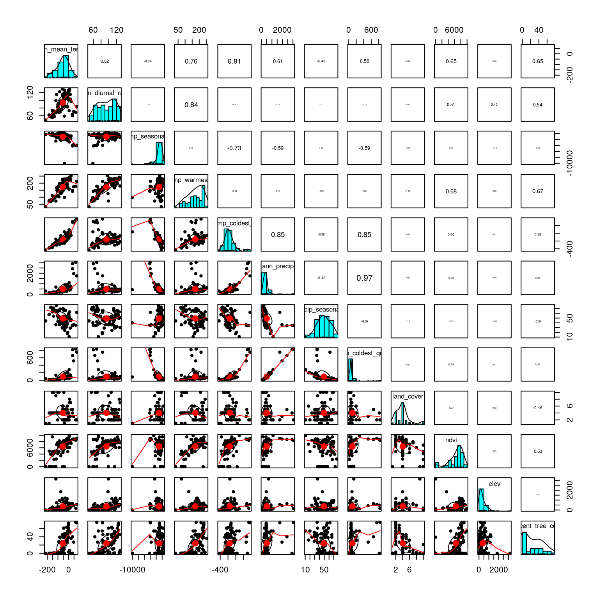
We only have a few strong correlations. Below, find one option for variable reduction. This could be modified based on ecological and/or biological knowledge about the species or specific hypotheses about the environmental drivers of selection:
precip_coldest_quarterandann_precipare correlated at 0.97; remove one.- If we remove
max_temp_warmest_monthandmin_temp_coldest_month, we eliminate the remaining strong correlations in a small number of predictors (and still have measures of temperature range and variation included). - Also investigate the distribution of factor levels in
land_cover.
pred <- subset(env, select=-c(precip_coldest_quarter, max_temp_warmest_month, min_temp_coldest_month))
table(pred$land_cover)##
## 0 1 5 7 8 10 12 14 15 16
## 3 23 7 40 7 4 2 1 1 6The distribution of factor levels is highly skewed towards classes 1 & 7, leaving the remaining classes with small numbers of individuals. These characteristics make it unlikely to be a highly informative predictor; let’s remove it.
Let’s look at this reduced set of predictors:
pred <- pred[,5:12]
colnames(pred) <- c("AMT","MDR","sdT","AP","cvP","NDVI","Elev","Tree")
pairs.panels(pred, scale=T)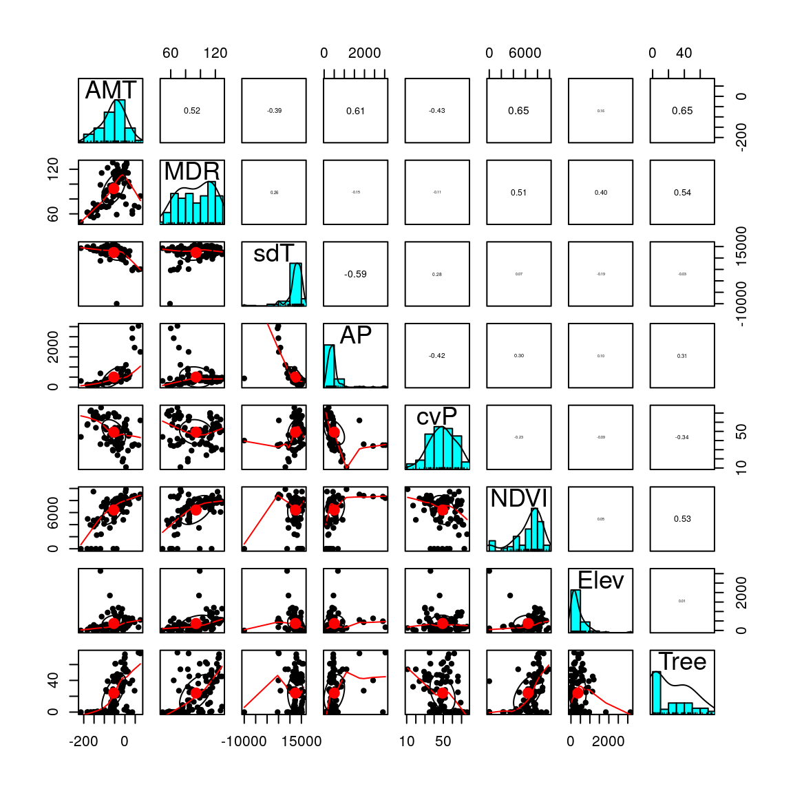
This looks better. Let’s move on and run the RDA.
Run the RDA
The code to run the RDA is simple. However, as noted previously, we highly recommend Borcard et al. (2011) for details on the implementation and interpretation of RDA models and the objects created by vegan. RDA runs relatively quickly on most data sets, however on a very large data set (such as the full wolf data set) it can take 15-20 minutes, depending on the computer.
Note: if your predictors include any factors, you’ll need to write out the formula in the rda call if you want to include a significance test of the constrained axis (code shown below). Since we are not using any factors in this analysis, we can use the shorthand formula gen.imp ~ .
## Call: rda(formula = gen.imp ~ AMT + MDR + sdT + AP + cvP + NDVI +
## Elev + Tree, data = pred, scale = T)
##
## Inertia Proportion Rank
## Total 8307.000 1.000
## Constrained 1113.488 0.134 8
## Unconstrained 7193.512 0.866 85
## Inertia is correlations
##
## Eigenvalues for constrained axes:
## RDA1 RDA2 RDA3 RDA4 RDA5 RDA6 RDA7 RDA8
## 281.19 216.87 179.53 110.84 89.78 87.15 75.93 72.20
##
## Eigenvalues for unconstrained axes:
## PC1 PC2 PC3 PC4 PC5 PC6 PC7 PC8
## 261.51 211.68 197.60 171.80 127.67 121.61 115.54 110.04
## (Showing 8 of 85 unconstrained eigenvalues)First, note that we will have as many constrained (“RDA”) axes as we have predictors in the model. All residual variance is then modeled by PCA (the unconstrained “PC” axes). The proportion of the variance explained by the environmental predictors is given under the “Proportion” column for “Constrained”; this is equivalent to the R2 of a multiple regression. Just like in multiple regression, this R2 will be biased and should be adjusted based on the number of predictors. We can calculate the adjusted R2 using:
## $r.squared
## [1] 0.1340421
##
## $adj.r.squared
## [1] 0.05254019Our constrained ordination explains about 5% of the variation; this low explanatory power is not surprising given that we expect that most of the SNPs in our dataset will not show a relationship with the environmental predictors (e.g., most SNPs will be neutral).
The eigenvalues for the constrained axes reflect the variance explained by each canonical axis:
## Importance of components:
## RDA1 RDA2 RDA3 RDA4 RDA5
## Eigenvalue 281.1906 216.8651 179.5282 110.84337 89.78143
## Proportion Explained 0.2525 0.1948 0.1612 0.09955 0.08063
## Cumulative Proportion 0.2525 0.4473 0.6085 0.70807 0.78870
## RDA6 RDA7 RDA8
## Eigenvalue 87.14904 75.92523 72.20485
## Proportion Explained 0.07827 0.06819 0.06485
## Cumulative Proportion 0.86697 0.93515 1.00000We can visualize this information using a screeplot of the canonical eigenvalues by calling screeplot:

Here, we can see that the first three constrained axes explain most of the variance. The screeplot provides an informal (and quick) way to determine how many constrained axes to include when we search for candidate SNPs (below). We could start by investigating RDA axes that explain the most variance (excluding those after the “drop off” point in the screeplot.)
Now let’s check our RDA model for significance using formal tests. We can assess both the full model and each constrained axis using F-statistics (Legendre et al, 2010). The null hypothesis is that no linear relationship exists between the SNP data and the environmental predictors. See ?anova.cca for more details and options.
signif.full <- anova.cca(wolf.rda, parallel=getOption("mc.cores")) # default is permutation=999
signif.full## Permutation test for rda under reduced model
## Permutation: free
## Number of permutations: 999
##
## Model: rda(formula = gen.imp ~ AMT + MDR + sdT + AP + cvP + NDVI + Elev + Tree, data = pred, scale = T)
## Df Variance F Pr(>F)
## Model 8 1113.5 1.6446 0.001 ***
## Residual 85 7193.5
## ---
## Signif. codes: 0 '***' 0.001 '**' 0.01 '*' 0.05 '.' 0.1 ' ' 1The full model is significant, but that doesn’t tell us much. We can check each constrained axis for significance using the code below. For this test, each constrained axis is tested using all previous constrained axes as conditions. See ?anova.cca and Legendre et al. (2010) for details. The purpose here is to determine which constrained axes we should investigate for candidate loci.
This analysis is time intensive (taking up to a few hours for the full wolf data set), so we will not run the code here. If we did run it, we would find that the first three constrained axes are significant (p = 0.001); constrained axis 4 has a p-value of 0.080, while axes 5-8 have p-values > 0.850. This corresponds with our evaluation of the screeplot, above.
Finally, vegan has a simple function for checking Variance Inflation Factors for the predictor variables used in the model:
## AMT MDR sdT AP cvP NDVI Elev Tree
## 7.854243 6.495892 2.775059 4.051610 1.318631 2.285632 2.028377 2.260139All values are below 10, and most are below 5, which indicates that multicollinearity among these predictors shouldn’t be a problem for the model. We could remove one of the temperature variables (AMT or MDR) if we were concerned about these higher VIF values (Zuur et al., 2010).
Plot the RDA
We’ll start with simple triplots from vegan. Here we’ll use scaling=3 (also known as “symmetrical scaling”) for the ordination plots. This scales the SNP and individual scores by the square root of the eigenvalues. See Borcard et al. (2011) or the vegan help for more information on scaling in RDA plots.
plot(wolf.rda, scaling=3) # default is axes 1 and 2
plot(wolf.rda, choices = c(1, 3), scaling=3) # axes 1 and 3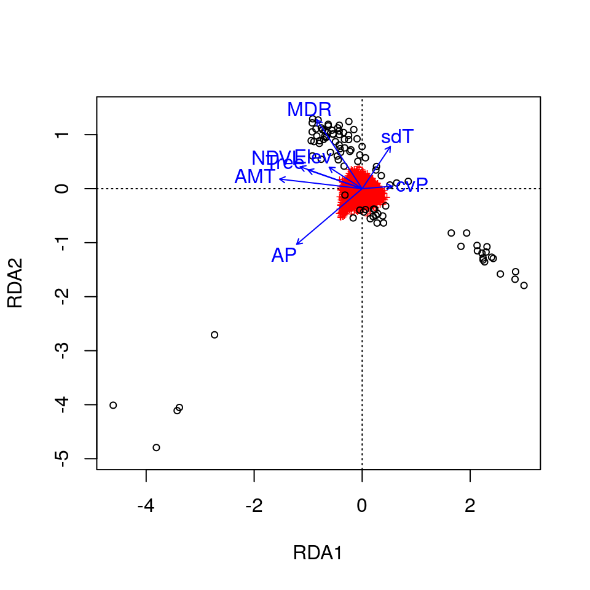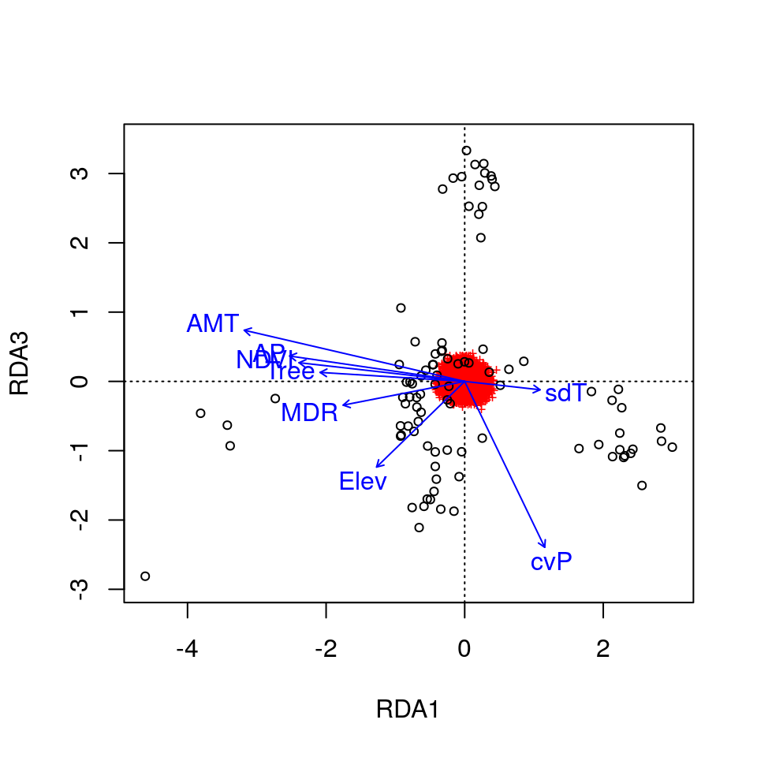
Here, the SNPs are in red (in the center of each plot), and the individuals are the black circles. The blue vectors are the environmental predictors. The relative arrangement of these items in the ordination space reflects their relationship with the ordination axes, which are linear combinations of the predictor variables.
Let’s make some more informative plots. We’ll color the individual points based on their ecotype, which we can find in the env data set.
levels(env$ecotype) <- c("Western Forest","Boreal Forest","Arctic","High Arctic","British Columbia","Atlantic Forest")
eco <- env$ecotype
bg <- c("#ff7f00","#1f78b4","#ffff33","#a6cee3","#33a02c","#e31a1c") # 6 nice colors for our ecotypesThis time, we’ll set the plots up and add each component in separately:
# axes 1 & 2
plot(wolf.rda, type="n", scaling=3)
points(wolf.rda, display="species", pch=20, cex=0.7, col="gray32", scaling=3) # the SNPs
points(wolf.rda, display="sites", pch=21, cex=1.3, col="gray32", scaling=3, bg=bg[eco]) # the wolves
text(wolf.rda, scaling=3, display="bp", col="#0868ac", cex=1) # the predictors
legend("bottomright", legend=levels(eco), bty="n", col="gray32", pch=21, cex=1, pt.bg=bg)
# axes 1 & 3
plot(wolf.rda, type="n", scaling=3, choices=c(1,3))
points(wolf.rda, display="species", pch=20, cex=0.7, col="gray32", scaling=3, choices=c(1,3))
points(wolf.rda, display="sites", pch=21, cex=1.3, col="gray32", scaling=3, bg=bg[eco], choices=c(1,3))
text(wolf.rda, scaling=3, display="bp", col="#0868ac", cex=1, choices=c(1,3))
legend("topleft", legend=levels(eco), bty="n", col="gray32", pch=21, cex=1, pt.bg=bg)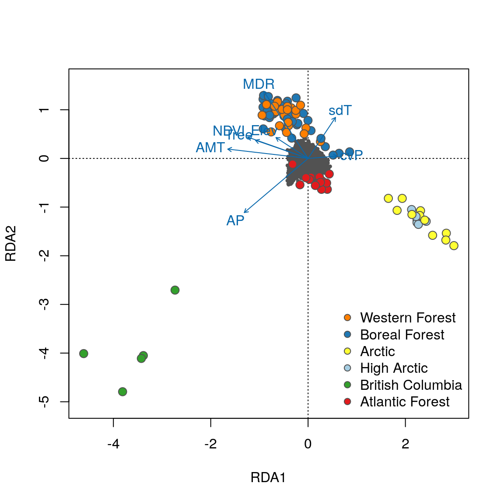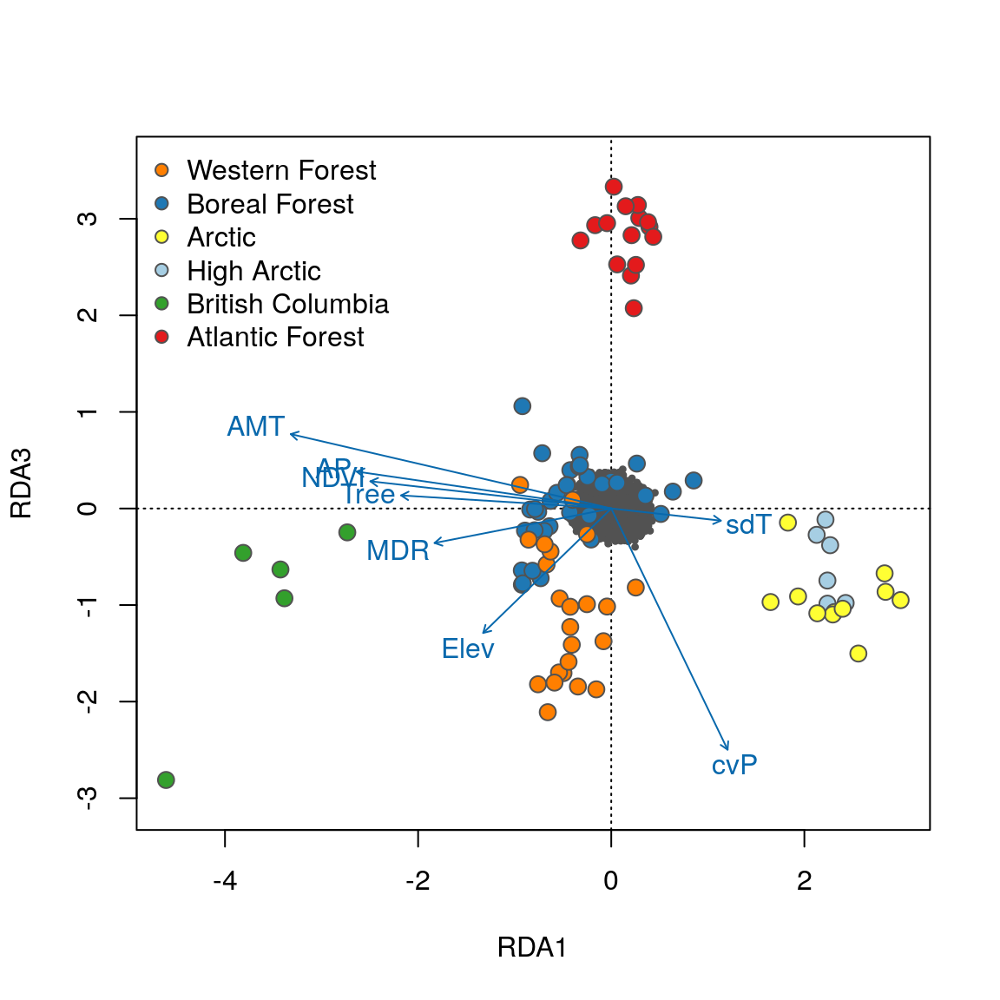
Now that the individuals are color coded, we can identify some interesting relationships. Starting with the plot of axes 1 and 2, note that individual genotypes from wet and temperate British Columbia (green) are positively related to high annual precipitation (AP) and low temperature seasonality (sdT). By contrast, Artic and High Arctic individuals are characterized by small mean diurnal temperature range (MDR), low annual mean temperature (AMT), lower levels of tree cover (Tree) and NDVI (a measure of vegetation greenness), and are found at lower elevation. Atlantic Forest and Western Forest individuals load more strongly on RDA axis 3, showing weak and strong precipitation seasonality (cvP) respectively, consistent with continental-scale climate in these regions.
Identify candidate SNPs involved in local adaptation
We’ll use the loadings of the SNPs in the ordination space to determine which SNPs are candidates for local adaptation. The SNP loadings are stored as species in the RDA object. We’ll extract the SNP loadings from the three significant constrained axes:
If we look at histograms of the loadings on each RDA axis, we can see their (relatively normal) distributions. SNPs loading at the center of the distribution are not showing a relationship with the environmental predictors; those loading in the tails are, and are more likely to be under selection as a function of those predictors (or some other predictor correlated with them).
hist(load.rda[,1], main="Loadings on RDA1")
hist(load.rda[,2], main="Loadings on RDA2")
hist(load.rda[,3], main="Loadings on RDA3") 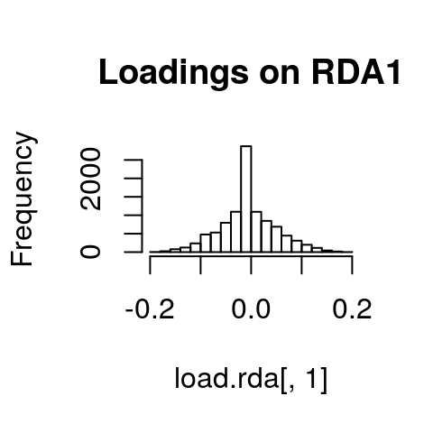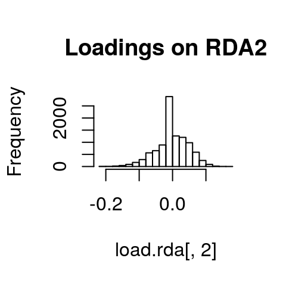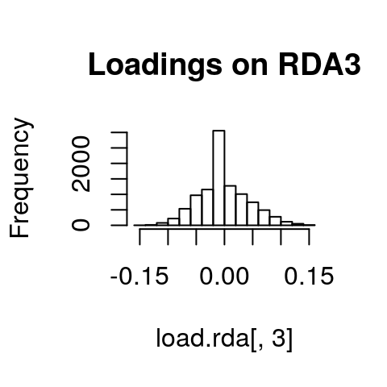
I’ve written a simple function to identify SNPs that load in the tails of these distributions. We’ll start with a 3 standard deviation cutoff (two-tailed p-value = 0.0027). As with all cutoffs, this can be modified to reflect the goals of the analysis and our tolerance for true positives vs. false positives. For example, if you needed to be very conservative and only identify those loci under very strong selection (i.e., minimize false positive rates), you could increase the number of standard deviations to 3.5 (two-tailed p-value = 0.0005). This would also increase the false negative rate. If you were less concerned with false positives, and more concerned with identifying as many potential candidate loci as possible (including those that may be under weaker selection), you might choose a 2.5 standard deviation cutoff (two-tailed p-value = 0.012).
I define the function here as outliers, where x is the vector of loadings and z is the number of standard deviations to use:
outliers <- function(x,z){
lims <- mean(x) + c(-1, 1) * z * sd(x) # find loadings +/-z sd from mean loading
x[x < lims[1] | x > lims[2]] # locus names in these tails
}Now let’s apply it to each significant constrained axis:
cand1 <- outliers(load.rda[,1],3) # 38
cand2 <- outliers(load.rda[,2],3) # 69
cand3 <- outliers(load.rda[,3],3) # 34
ncand <- length(cand1) + length(cand2) + length(cand3)
ncand## [1] 141We have 38 candidates on axis 1, 69 on axis 2, and 34 on axis 3, for a total of 141 candidate SNPs (note that the full wolf data set produces 604 candidates).
Next, we’ll organize our results by making one data frame with the axis, SNP name, loading, & correlation with each predictor:
cand1 <- cbind.data.frame(rep(1,times=length(cand1)), names(cand1), unname(cand1))
cand2 <- cbind.data.frame(rep(2,times=length(cand2)), names(cand2), unname(cand2))
cand3 <- cbind.data.frame(rep(3,times=length(cand3)), names(cand3), unname(cand3))
colnames(cand1) <- colnames(cand2) <- colnames(cand3) <- c("axis","snp","loading")
cand <- rbind(cand1, cand2, cand3)
cand$snp <- as.character(cand$snp)Let’s add in the correlations of each candidate SNP with the eight environmental predictors:
foo <- matrix(nrow=(ncand), ncol=8) # 8 columns for 8 predictors
colnames(foo) <- c("AMT","MDR","sdT","AP","cvP","NDVI","Elev","Tree")
for (i in 1:length(cand$snp)) {
nam <- cand[i,2]
snp.gen <- gen.imp[,nam]
foo[i,] <- apply(pred,2,function(x) cor(x,snp.gen))
}
cand <- cbind.data.frame(cand,foo)
head(cand)## axis snp loading AMT MDR sdT
## 1 1 chr12.18324211 0.1653558 -0.5241186 -0.49494075 -0.005959814
## 2 1 chr1.34067314 0.1752205 -0.5099884 -0.33919031 0.155830913
## 3 1 chr14.50142980 -0.1732094 0.3575841 -0.03942464 -0.459226591
## 4 1 chr24.41186635 -0.1731387 0.4864240 0.24621551 -0.164103691
## 5 1 chr38.4478906 0.1653778 -0.5415994 -0.42718095 -0.021246605
## 6 1 chr6.36999927 0.1726538 -0.6337194 -0.38186764 0.197238082
## AP cvP NDVI Elev Tree
## 1 -0.1253256 0.1933743 -0.4376680 -0.30596534 -0.3944034
## 2 -0.3650321 0.1913584 -0.4122741 -0.15441188 -0.4561399
## 3 0.6469386 -0.1770349 0.1055266 0.46473573 0.1117899
## 4 0.4102671 -0.2097322 0.3304666 0.19130351 0.3384255
## 5 -0.2180935 0.2587389 -0.5574285 -0.05247521 -0.3324873
## 6 -0.2750116 0.3336288 -0.4764188 -0.06159512 -0.3784786Now we have a data frame of 141 candidate SNPs and their correlation with our 8 environmental predictors.
Investigate the candidates
We’ll start off by looking for duplicate detections. These are SNPs that are identified as candidates on more than one RDA axis.
## [1] 7##
## 0
## 38##
## 0 1
## 62 7##
## 0
## 34We’ve now reduced our candidates to 134 unique SNPs.
Next, we’ll see which of the predictors each candidate SNP is most strongly correlated with:
for (i in 1:length(cand$snp)) {
bar <- cand[i,]
cand[i,12] <- names(which.max(abs(bar[4:11]))) # gives the variable
cand[i,13] <- max(abs(bar[4:11])) # gives the correlation
}
colnames(cand)[12] <- "predictor"
colnames(cand)[13] <- "correlation"
table(cand$predictor) ##
## AMT AP cvP Elev MDR NDVI sdT Tree
## 17 58 32 1 20 4 1 1Based on the strongest correlations, most SNPs are associated with our two precipitation variables (annual precipitation and precipitation seasonality), with temperature variables accounting for the second highest number of detections (mean diurnal range and annual mean temperature). The other four variables are related to a smaller number of detections.
Note that, in some cases, correlations may be strong for multiple variables (depending on collinearity among predictors). It may be useful to consider how candidate SNPs are correlated with multiple predictors. We could, for example, look at the cand object and investigate correlations with predictors other than the predictor with the highest correlation coefficient. However, for this analysis we will focus on the strongest correlations of each SNP with one predictor.
Plot the SNPs
Let’s look at RDA plots again, but this time focus in on the SNPs in the ordination space. We’ll color code the SNPs based on the predictor variable that they are most strongly correlated with. There is a lot of code to set this up, which you can mostly ignore.
sel <- cand$snp
env <- cand$predictor
env[env=="AP"] <- '#1f78b4'
env[env=="cvP"] <- '#a6cee3'
env[env=="MDR"] <- '#6a3d9a'
env[env=="AMT"] <- '#e31a1c'
env[env=="NDVI"] <- '#33a02c'
env[env=="Elev"] <- '#ffff33'
env[env=="sdT"] <- '#fb9a99'
env[env=="Tree"] <- '#b2df8a'
# color by predictor:
col.pred <- rownames(wolf.rda$CCA$v) # pull the SNP names
for (i in 1:length(sel)) { # color code candidate SNPs
foo <- match(sel[i],col.pred)
col.pred[foo] <- env[i]
}
col.pred[grep("chr",col.pred)] <- '#f1eef6' # non-candidate SNPs
empty <- col.pred
empty[grep("#f1eef6",empty)] <- rgb(0,1,0, alpha=0) # transparent
empty.outline <- ifelse(empty=="#00FF0000","#00FF0000","gray32")
bg <- c('#1f78b4','#a6cee3','#6a3d9a','#e31a1c','#33a02c','#ffff33','#fb9a99','#b2df8a')Now we’re ready to plot the SNPs:
# axes 1 & 2
plot(wolf.rda, type="n", scaling=3, xlim=c(-1,1), ylim=c(-1,1))
points(wolf.rda, display="species", pch=21, cex=1, col="gray32", bg=col.pred, scaling=3)
points(wolf.rda, display="species", pch=21, cex=1, col=empty.outline, bg=empty, scaling=3)
text(wolf.rda, scaling=3, display="bp", col="#0868ac", cex=1)
legend("bottomright", legend=c("AP","cvP","MDR","AMT","NDVI","Elev","sdT","Tree"), bty="n", col="gray32", pch=21, cex=1, pt.bg=bg)
# axes 1 & 3
plot(wolf.rda, type="n", scaling=3, xlim=c(-1,1), ylim=c(-1,1), choices=c(1,3))
points(wolf.rda, display="species", pch=21, cex=1, col="gray32", bg=col.pred, scaling=3, choices=c(1,3))
points(wolf.rda, display="species", pch=21, cex=1, col=empty.outline, bg=empty, scaling=3, choices=c(1,3))
text(wolf.rda, scaling=3, display="bp", col="#0868ac", cex=1, choices=c(1,3))
legend("bottomright", legend=c("AP","cvP","MDR","AMT","NDVI","Elev","sdT","Tree"), bty="n", col="gray32", pch=21, cex=1, pt.bg=bg)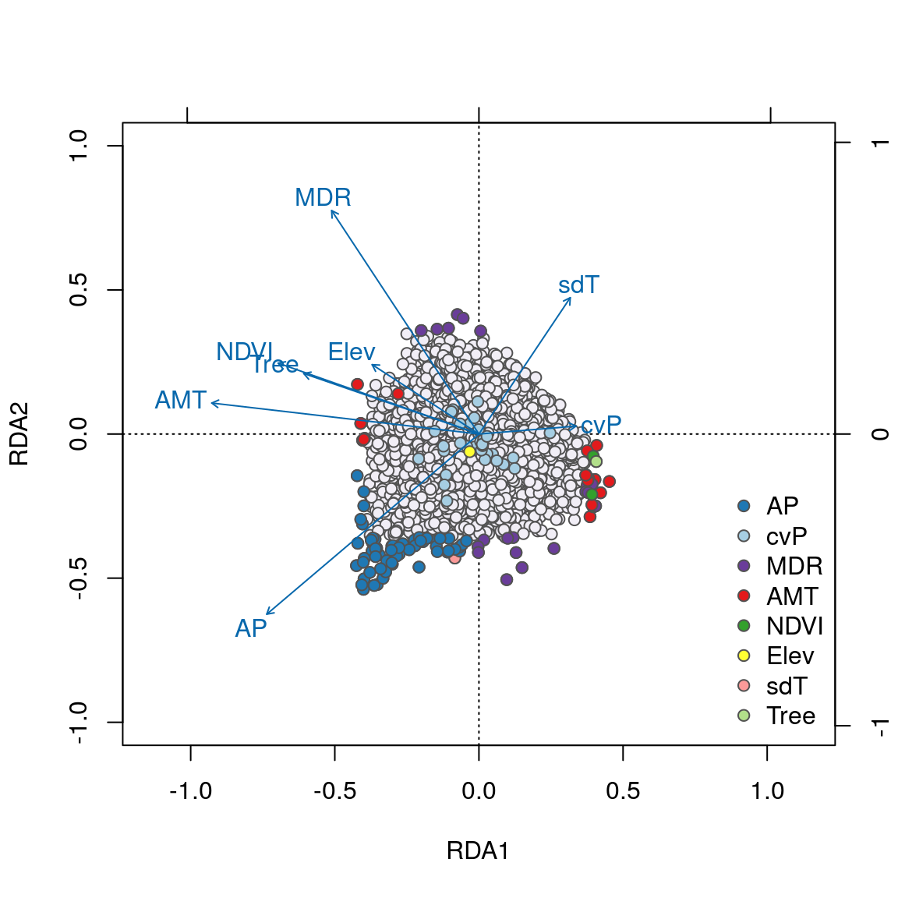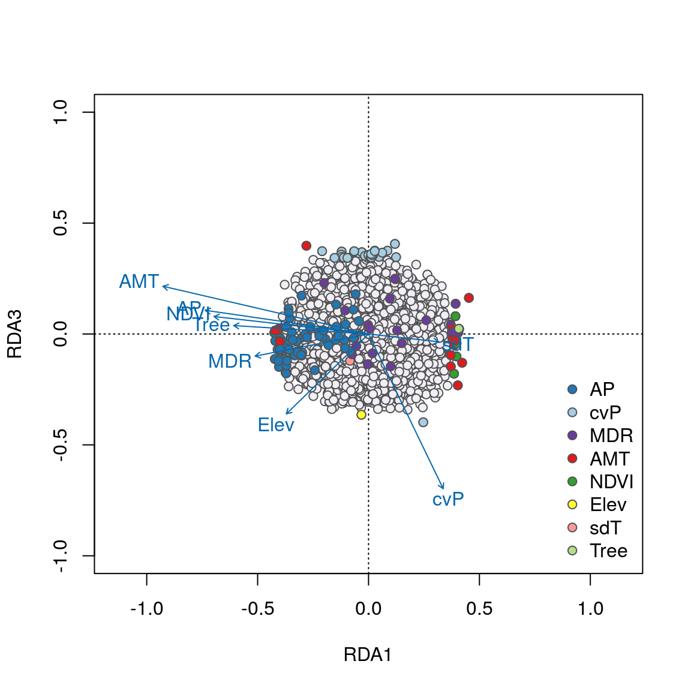
We can see some interesting relationships in these plots. For example, SNPs most strongly correlated with annual precipitation (AP) have strong loadings in the lower left quadrant between RDA axes 1 and 2 along the AP vector, accounting for the majority of these 58 AP-correlated detections. Most candidates highly correlated with the important temperature variables (AMT and MDR) load strongly on axes 1 and 2, respectively. Note how candidate SNPs correlated with precipitation seasonality (cvP) and elevation are located in the center of the plot, and will not be detected as outliers on axes 1 or 2. However, these loci are detected on axis 3.
Overall, candidate SNPs on axis 1 represent multilocus sets of SNP genotypes associated with annual precipitation and mean diurnal range; SNPs on axis 2 represent genotypes associated with annual precipitation and annual mean temperature; and SNPs on axis 3 represent genotypes associated with precipitation seasonality.
These detections differ from the candidates identified using a univariate GEA test by Schweizer et al. (2016). From the full (42,587 SNP) data set, in which RDA identified 556 unique candidates, only 52 were found in common between the univariate test and the RDA results (see Forester et al. 2018). In contrast to the univariate detections, the majority (67%) of SNPs identified by RDA were most strongly associated with precipitation variables, which are known drivers of morphology and population structure in gray wolves (Geffen et al., 2004; O’Keefe et al., 2013; Schweizer et al., 2016). These findings provide new candidate regions and multilocus haplotypes for understanding local adaptation of gray wolves across their North American range.
Conclusions
In summary, Redundancy Analysis (RDA) is a highly effective genotype-environment association method, which can identify unique haplotypes associated with the multivariate environment. In a simulation study, RDA showed a superior combination of low false positive and high true positive rates across weak, moderate, and strong multilocus selection. These results were robust across the levels of population structure, demographic histories, sampling designs, and sample sizes tested (Forester et al., 2018).
It is important to note that RDA has not yet been tested in situations with high population structure; see Forester et al. (2018) for recommendations on using RDA in this context.
Overall, RDA is an effective means of detecting adaptive processes that result in weak, multilocus molecular signatures, providing a powerful tool for investigating the genetic basis of local adaptation and informing management actions to conserve the evolutionary potential of species of agricultural, forestry, fisheries, and conservation concern.
Contributors
Brenna R. Forester (Author)
- Martin Laporte (reviewer)
Stéphanie Manel (reviewer)
References
Borcard D, Gillet F, Legendre P (2011) Numerical Ecology with R. Springer, New York.
Dormann CF, Elith J, Bacher S, et al. (2013) Collinearity: a review of methods to deal with it and a simulation study evaluating their performance. Ecography, 36: 27-46.
Forester BR, Lasky JR, Wagner HH, Urban DL (2018) Comparing methods for detecting multilocus adaptation with multivariate genotype-environment associations. Molecular Ecology.
Frichot E, François O (2015) LEA: An R package for landscape and ecological association studies. Methods in Ecology and Evolution, 6: 925-929.
Geffen E, Anderson MJ, Wayne RK (2004) Climate and habitat barriers to dispersal in the highly mobile grey wolf. Molecular Ecology, 13: 2481-2490.
Gosselin T (2017) grur: an R package tailored for RADseq data imputations. R package version 0.0.1 doi:10.5281/zenodo.496176.
Jombart, T (2008) adegenet: a R package for the multivariate analysis of genetic markers. Bioinformatics, 24: 1403-1405.
Legendre P, Legendre L (2012) Numerical Ecology, 3rd edition. Elsevier, Amsterdam.
Legendre P, Oksanen J, ter Braak CJ (2010) Testing the significance of canonical axes in redundancy analysis. Methods in Ecology and Evolution, 2: 269-277.
Money D, Migicovsky Z, Gardner K, Myles S (2017) LinkImputeR: user-guided genotype calling and imputation for non-model organisms. BMC Genomics, 18: 1-12.
O’Keefe FR, Meachen J, Fet EV, Brannick A (2013) Ecological determinants of clinal morphological variation in the cranium of the North American gray wolf. Journal of Mammalogy, 94: 1223-1236.
Oksanen J, Blanchet FG, Kindt R, et al. (2016) vegan: Community Ecology Package. R package version 2.3-5.
Purcell S, Neale B, Todd-Brown K, et al. (2007) PLINK: a toolset for whole-genome association and population-based linkage analysis. American Journal of Human Genetics, 81: 559-575. Version 1.07.
Rellstab C, Gugerli F, Eckert AJ, Hancock AM, Holderegger R (2015) A practical guide to environmental association analysis in landscape genomics. Molecular Ecology, 24: 4348-4370.
Schweizer RM, vonHoldt BM, Harrigan R, et al. (2016) Genetic subdivision and candidate genes under selection in North American grey wolves. Molecular Ecology, 25: 380-402.
Zuur AF, Ieno EN, Elphick CS (2010) A protocol for data exploration to avoid common statistical problems. Methods in Ecology and Evolution, 1: 3-14.
Session Information
## ─ Session info ───────────────────────────────────────────────────────────────────────────────────
## setting value
## version R version 3.6.0 (2019-04-26)
## os Debian GNU/Linux 9 (stretch)
## system x86_64, linux-gnu
## ui X11
## language (EN)
## collate en_US.UTF-8
## ctype en_US.UTF-8
## tz Etc/UTC
## date 2019-05-11
##
## ─ Packages ───────────────────────────────────────────────────────────────────────────────────────
## package * version date lib source
## assertthat 0.2.1 2019-03-21 [1] CRAN (R 3.6.0)
## backports 1.1.4 2019-04-10 [1] CRAN (R 3.6.0)
## callr 3.2.0 2019-03-15 [1] CRAN (R 3.6.0)
## cli 1.1.0 2019-03-19 [1] CRAN (R 3.6.0)
## cluster 2.0.8 2019-04-05 [2] CRAN (R 3.6.0)
## crayon 1.3.4 2017-09-16 [1] CRAN (R 3.6.0)
## desc 1.2.0 2018-05-01 [1] CRAN (R 3.6.0)
## devtools 2.0.2 2019-04-08 [1] CRAN (R 3.6.0)
## digest 0.6.18 2018-10-10 [1] CRAN (R 3.6.0)
## evaluate 0.13 2019-02-12 [1] CRAN (R 3.6.0)
## foreign 0.8-71 2018-07-20 [2] CRAN (R 3.6.0)
## fs 1.3.1 2019-05-06 [1] CRAN (R 3.6.0)
## glue 1.3.1 2019-03-12 [1] CRAN (R 3.6.0)
## htmltools 0.3.6 2017-04-28 [1] CRAN (R 3.6.0)
## knitr 1.22 2019-03-08 [1] CRAN (R 3.6.0)
## lattice * 0.20-38 2018-11-04 [2] CRAN (R 3.6.0)
## magrittr 1.5 2014-11-22 [1] CRAN (R 3.6.0)
## MASS 7.3-51.4 2019-03-31 [2] CRAN (R 3.6.0)
## Matrix 1.2-17 2019-03-22 [2] CRAN (R 3.6.0)
## memoise 1.1.0 2017-04-21 [1] CRAN (R 3.6.0)
## mgcv 1.8-28 2019-03-21 [2] CRAN (R 3.6.0)
## mnormt 1.5-5 2016-10-15 [1] CRAN (R 3.6.0)
## nlme 3.1-139 2019-04-09 [2] CRAN (R 3.6.0)
## permute * 0.9-5 2019-03-12 [1] CRAN (R 3.6.0)
## pkgbuild 1.0.3 2019-03-20 [1] CRAN (R 3.6.0)
## pkgload 1.0.2 2018-10-29 [1] CRAN (R 3.6.0)
## prettyunits 1.0.2 2015-07-13 [1] CRAN (R 3.6.0)
## processx 3.3.1 2019-05-08 [1] CRAN (R 3.6.0)
## ps 1.3.0 2018-12-21 [1] CRAN (R 3.6.0)
## psych * 1.8.12 2019-01-12 [1] CRAN (R 3.6.0)
## R6 2.4.0 2019-02-14 [1] CRAN (R 3.6.0)
## Rcpp 1.0.1 2019-03-17 [1] CRAN (R 3.6.0)
## remotes 2.0.4 2019-04-10 [1] CRAN (R 3.6.0)
## rlang 0.3.4 2019-04-07 [1] CRAN (R 3.6.0)
## rmarkdown 1.12 2019-03-14 [1] CRAN (R 3.6.0)
## rprojroot 1.3-2 2018-01-03 [1] CRAN (R 3.6.0)
## sessioninfo 1.1.1 2018-11-05 [1] CRAN (R 3.6.0)
## stringi 1.4.3 2019-03-12 [1] CRAN (R 3.6.0)
## stringr 1.4.0 2019-02-10 [1] CRAN (R 3.6.0)
## testthat 2.1.1 2019-04-23 [1] CRAN (R 3.6.0)
## usethis 1.5.0 2019-04-07 [1] CRAN (R 3.6.0)
## vegan * 2.5-4 2019-02-04 [1] CRAN (R 3.6.0)
## withr 2.1.2 2018-03-15 [1] CRAN (R 3.6.0)
## xfun 0.6 2019-04-02 [1] CRAN (R 3.6.0)
## yaml 2.2.0 2018-07-25 [1] CRAN (R 3.6.0)
##
## [1] /usr/local/lib/R/site-library
## [2] /usr/local/lib/R/library